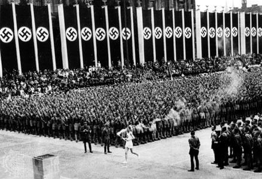

View more
A relay's legacy
How a core tradition of the Olympics rose out of Nazi Germany. The Olympic torch relay is no stranger to trouble. Even widely celebrated traditions can rise out of controversial foundings.
Photo: standford.edu

Going the distance
How many thousands of miles have torch bearers trekked? How many days has the relay occupied in history since it's founding? SOMETHING CONVEYING THE BY THE NUMBERS STUFF
Photo: Dave Weathwax | The Herald
Despite progress, women underpresented as torchbearers
Donec non enim in turpis pulvinar facilisis. Ut felis. Praesent dapibus, neque id cursus faucibus, tortor neque egestas augue, eu vulputate magna eros eu erat. Aliquam erat volutpat. Nam dui mi, tincidunt quis, accumsan porttitor, facilisis luctus, metus
Photo: FIND PICS OF FEMALE RUNNERS, BIG NAMES